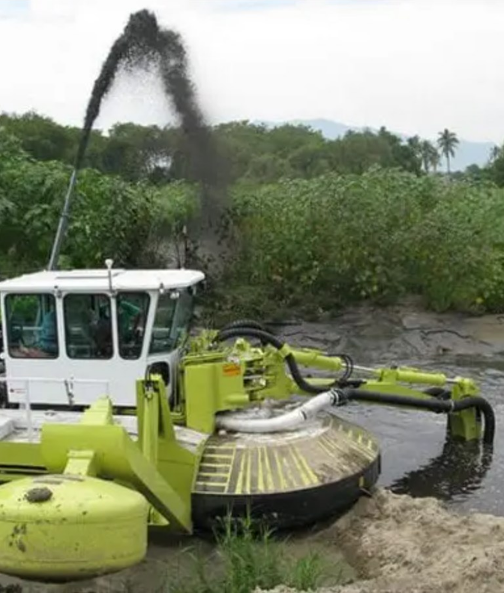
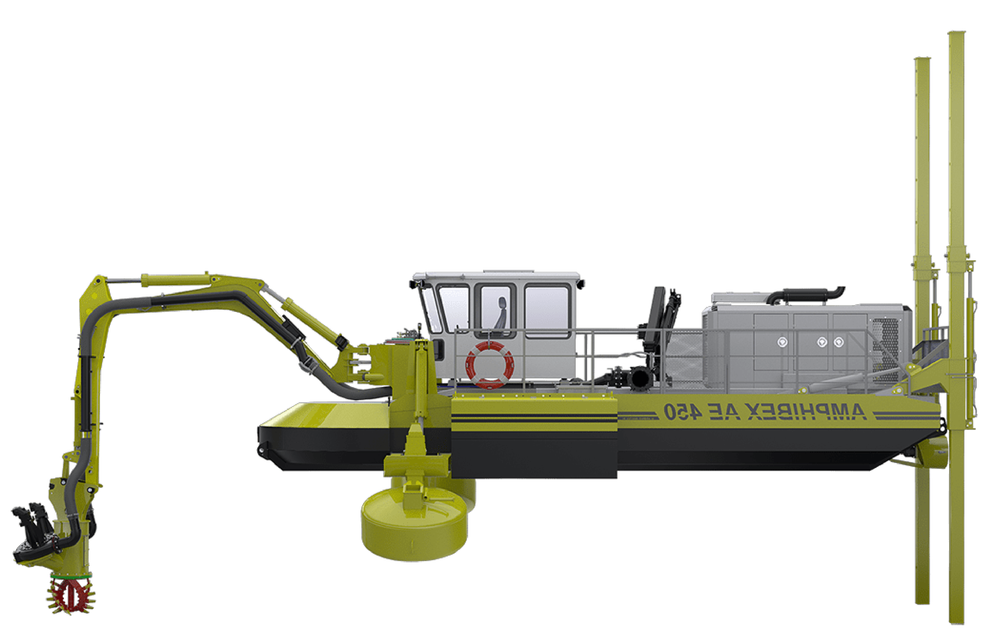
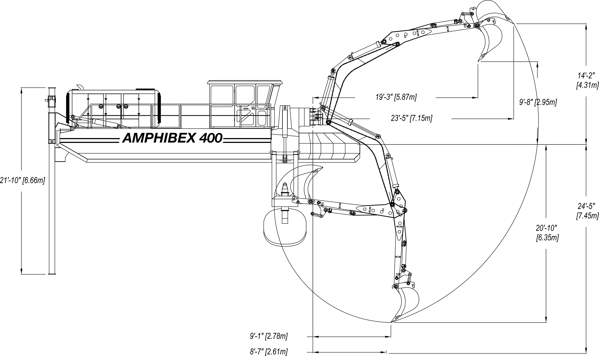

a service provided by Winnipeg Environmental Remediations Inc.

The AE-400 is the compact model of our range of Amphibex excavators and dredgers. Surprising and extremely versatile, this small dredger is ideal to complete a variety of works on the shores and underwater. The AE400 is easily transportable and excels at performing tasks in restrained areas, but its size does not affect its power.
Our fleet of AMPHIBEX 400s represents the ultimate environmentally sensitive machines that are able to work without disturbing marine and shoreline ecosystems. Economical and versatile, the AMPHIBEX 400 is fitted with enough power and strength to carry out a large wide variety of work. The boom can also be outfitted with an 8" wide rake for organics. When dredging, the AMPHIBEX boom is outfitted with a suction/dredging head and the sediment is pumped through a flexible pipe to the shoreline.

